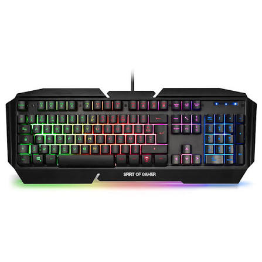

Un clavier Gaming est un clavier conçu pour le Gaming et, plus largement, pour les usages informatiques interactifs. Il intègre généralement des fonctionnalités pensées pour différents styles de jeu et préférences de saisie : switches mécaniques ou à membrane, touches programmables, éclairage personnalisable et taux d’interrogation (polling rate) plus élevé.
| nom | photo | prix |
| clavier | e | f |
